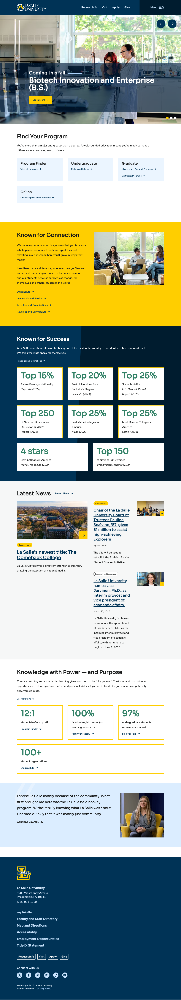
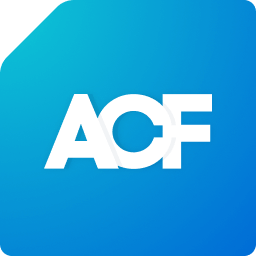
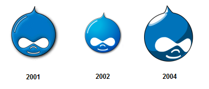

Holy Family
University
Website Redesign
For a campus more alive than its website currently shows.
Every requirement, answered.
Thirty pages. Your RFP runs thirty-six and carries roughly 240 discrete requirements. Every one is mapped to a specific page in this response. The density on page four is deliberate: we wanted Rick to see the full mapping before he had to hunt for it.
URLs live on holyfamily.edu today.
Our launch target: roughly 650.
What you asked for. What we heard.
Your RFP runs 36 pages. We read every one. The table below maps the requirements most agencies gloss over to specific pages in this response.
| What the RFP asks for | What we committed to | Page |
|---|---|---|
| Adult & Graduate enrollment priority (Sec. 4) | Variant B hero in base scope, not an add-on | p.11 |
| "Partners, not obstacles" (Sec. 7) | Shared GitHub write access day one. Dual code review. | p.20 |
| llms.txt + schema.org (Sec. 6) | Both drafted for holyfamily.edu inside this proposal | p.15 |
| WCAG 2.2 AA built in, not retrofitted (Sec. C.4) | Shift-left. Axe in CI. Manual screen reader on every template | p.23 |
| Traditional vs. headless WordPress (Sec. C.1) | Traditional. Honest tradeoff math, four reasons | p.21 |
| Slate CRM via Gravity Forms webhook (Sec. C.5) | Native forms to Slate Source Format. Ping day one | p.22 |
| Content migration (Sec. B.6 · we count 1,601) | Consolidated to ~650. 60% cut, every URL 301'd | p.19 |
| Enrollment funnel measurement (Sec. 6) | GA4 + GTM + 4-stage funnel + Looker Studio | p.17 |
| Security + FERPA + GDPR (Sec. 6) | Four pillars. Pantheon read-only. 24h CVE patch | p.24 |
| Personalization, 8 questions (Sec. 6) | Foundational in base scope, advanced as priced add-on | p.28 |
| Risk management & change control (Sec. B.9, D.3) | Five-risk register, written change orders, named categories | p.25 |
| Catholic mission (Sec. G.2 Cultural Fit) | Whole person as a design principle | p.13 |
Six artifacts we'll hand you this week.
A proposal is an opportunity to prove competence before a contract is signed. The six artifacts below are drafted inside this document, ready to refine with your team in Discovery. We would rather show the work now than promise it later.
An opinionated IA for holyfamily.edu.
Your current site has 1,601 URLs across 180+ distinct top-level prefixes. Our first-pass recommendation consolidates to eight sections and roughly 650 active pages, a 60 percent reduction. Every URL is justified by a primary audience. We expect half of this to change during Discovery. The other half is load-bearing.
- /programs/ academic programs hub~130 pgs
- /programs/undergraduate/ 30+ majors~45 pgs
- /programs/graduate/ 20+ grad programs~40 pgs
- /programs/adult-continuing/ ACE + credit for prior learning~25 pgs
- /programs/online/ online degree paths~20 pgs
- /admissions/ enrollment hub · one smart RFI form~45 pgs
- /student-life/ residential, clubs, ministry~55 pgs
- /about/ mission, leadership, history~40 pgs
- /news/ 2-year rolling window · 500+ archived~120 pgs
- /athletics/ 19 varsity programs~65 pgs
- /alumni/ giving, events, stories~45 pgs
- /directory/ faculty & staff · single source~150 pgs
Holy Family versus the Philly Catholic set.
Your real competitors on a visit weekend: La Salle, Villanova, Neumann, Chestnut Hill. Every peer has modernized. Holy Family is the outlier today. This is fixable in ten months.




More applications. Specifically adult and graduate.
The real Holy Family lives on the ground. Ninety-three percent of graduates placed into full-time work within six months. Forty percent of the student body studying Nursing and Health Sciences. The Sisters of the Holy Family of Nazareth still shaping a 1954 founding into a vibrant Catholic learning community. That university does not live on holyfamily.edu today, and the gap between the two is the reason prospective adult and graduate applicants leave without applying. Closing the gap is the entire work of this proposal. Conservative math on page sixteen shows a $2.5M year-one return on a $235K investment.
Four moves that turn browsers into applicants.
Section 4 of your RFP names Adult and Graduate enrollment as the top growth priority. These applicants browse from phones at night between shifts, compare five schools in a single sitting, and need cost and schedule visible above the fold. The four tactics below are the specific moves we will ship to convert them, not observations about who they are.
The first twelve seconds, drafted.
Become the person Holy Family is looking for.
A Catholic university in Philadelphia with the region's strongest nursing pipeline, over thirty undergraduate majors, and 93% employment within six months of graduation.
The same homepage, drafted for them.
Finish what you started. On your schedule.
Twenty plus graduate programs. Accelerated adult completion paths. Evening and online formats. Credit for prior learning. Time-to-degree and cost, up front.
Where we stand apart.
Founded in 1954 by the Sisters of the Holy Family of Nazareth.
Holy Family University is a vibrant Catholic learning community that educates the whole person for a life of integrity, service, and personal excellence. We quote your mission statement here because almost every agency will quote it back as a setup for a generic "inclusive design" pitch. We read it differently. It is an instruction manual for how this site should be built.
Who we are building for.
The RFP names Rick Mitchell as the primary contact, but a decision at this scale involves the full President's Cabinet. We have read your public leadership page. Below is our read of who will evaluate this proposal, what each person cares about, and how this response serves each goal.
llms.txt and schema, written for you.
Roughly half of prospective students now research universities through ChatGPT, Claude, Gemini, and Perplexity on a weekly basis. Ninety-three percent of AI search sessions end without a single click through to a source. The content these systems surface is increasingly the first impression a family forms of the university. Section 6 of your RFP asks seven specific questions about AI content architecture. Below is the actual llms.txt file and JSON-LD EducationalOrganization payload we would ship on day one of development, filled in with real Holy Family data.
EducationalOrganization, CollegeOrUniversity, EducationalOccupationalProgram on every program page, Course, Person on every faculty profile, Event, NewsArticle, FAQPage. All JSON-LD, server-rendered, reachable without JavaScript execution as the RFP requires for agentic browsing.A $235K investment, a $2.5M year-one return.
| Input | Value |
|---|---|
| Baseline enrollment 3,700 students · ~900 new/yr · ~$30K mean tuition |
$27.0M |
| Conservative conversion lift Industry benchmark: 5–15% |
+8% |
| Incremental enrollment revenue 72 additional enrollees · year 1 |
+$2.16M |
| SEO recovery at launch 301 map + schema + llms.txt |
+$350K |
| Year-one return | ~$2.5M |
| Project cost (fixed fee) | $235K |
| Year-one ROI multiple | 10.6× |
A four-stage funnel, measured end to end.
Awareness → consideration → decision → conversion. Every stage tracked, every source attributed, every lift measurable. We preserve your existing GA4 and GTM container (GTM-5FPBQK3) and extend it with a framework Katherine Primus's team reads directly in Looker Studio.
Discovery is six weeks of structured listening.
- Ingest the 2025 prep work (week 1). Your content audit, governance guidelines, IA analysis, analytics baselines, and stakeholder surveys become our starting position. Zero rework. Phase 1 closes two weeks earlier than a standard Discovery cycle.
- Institutional listening (weeks 1–2). Thirty-minute one-on-ones with Dr. Prisco, Katherine Primus, Rick Mitchell, Mark Green, Edward Wright, and Eric Nelson. Each session recorded, synthesized within 48 hours, validated within 72.
- Content audit & AI-assisted classification (weeks 2–3). All 1,601 URLs classified via LLM batch into keep / rewrite / consolidate / archive / delete. Human review on every decision. Auditable worksheet delivered.
- Task-based user research (weeks 3–4). 8–10 participants across three segments (prospective undergraduate, prospective adult/graduate, current student). First-click testing on four key tasks: find a program, start an application, look up a professor, find an event.
- Information architecture validation (weeks 4–5). Card sort with 15–20 participants. Tree test on the proposed navigation. Baseline comparison against the current IA. The sitemap on page 06 is the first-pass recommendation; Discovery validates it with real users.
- Content model & sign-off (weeks 5–6). WordPress custom post types, ACF field groups, taxonomies. Drupal-to-WordPress field mapping. Gate G1 closes the phase with Rick Mitchell and Katherine Primus signing off.
1,601 URLs to approximately 650.
Migration at the surface is a labor cost. Migration under the surface is content strategy. A sixty percent reduction is not a promise to delete content, it is a commitment to identify what earns its place and protect the URL equity of what does not. AI drafts the classifications. Editors and your team make the final calls. Tests verify nothing breaks.
| Action | URLs | Outcome |
|---|---|---|
| News articles ≥ 2 years old | ~500 | Archived to /news-archive/ with 301s preserved |
| Duplicate request-information forms | ~22 | One smart form, Slate-routed by program |
| Duplicate program landing pages | ~80 | Canonical parent + sub-track model |
| Test, seasonal, expired pages | ~40 | Deleted with 301s to nearest canonical |
| Redundant policy pages | ~30 | Consolidated under a /policies/ hub |
| Top-level URL prefixes | 180 → 8 | Eight canonical sections, every URL justified |
| Net result at launch | ~650 | 60% reduction, every URL given a validated 301 |
Rick's team builds with us, not receives from us.
Four phrases in your RFP point in the same direction. "Partners, not obstacles." "Working sessions, not just presentations." "Knowledge transfer throughout the project, not just at handoff." "Welcomes input and code review from our developers." Each is specific enough to signal a settled preference. This response addresses each phrase with a concrete ritual rather than an adjective.
WordPress, not headless.
Your RFP prefers WordPress and explicitly invites a headless vs. traditional rationale. For Rick Mitchell's two-person team running this site for five years, traditional wins on every axis that matters. The largest talent pool, the most mature plugin ecosystem, the lowest total cost of ownership. We are not upselling an architecture your team cannot sustainably operate.
Tools your team already knows how to run.


lang attribute and a language selector in the utility nav, positioned to meet WCAG 2.2 AA bypass requirements.WCAG 2.2 AA, shifted left.
Your RFP insists accessibility be "integrated throughout the design and development process, not retrofitted." That language exists because a prior vendor did the opposite. Automated tools catch 30 to 57 percent of real WCAG failures. The other 70 percent is manual, and it is where we spend real hours.
- Design phase. Color contrast validated to 4.5:1 before mockups ship. 44×44 px touch targets in wireframes. Focus states designed as a first-class visual element for every interactive component.
- Development phase. Semantic HTML and ARIA from the first line. axe-core in the CI pipeline. Pull requests with accessibility regressions cannot merge.
- Content phase. Editor guardrails enforce alt text, heading hierarchy, link purpose. Editors cannot publish broken accessibility.
- QA phase. Manual keyboard-only testing plus screen reader testing with VoiceOver, NVDA, and JAWS on every template. Not just the homepage.
- Launch deliverable. ACR/VPAT signed at launch, not a remediation plan. Siteimprove continuous monitoring already in your stack, we configure new dashboards for WCAG 2.2 AA tracking.
OWASP. FERPA‑aware.
GDPR ready.
June 2026 to April 2027.
Target go-live: March 1, 2027 with a four-week buffer in Phase 5. Phase 4 intentionally schedules automated migration across winter break so university-dependent activities land in January when staff return.
- G1Content model + IA approved · Rick & Katherine signJul 10, 2026
- G2Design system & component library approvedSep 4, 2026
- G3Feature-complete site on Pantheon DevNov 25, 2026
- G4Migrated content + WCAG 2.2 AA conformance reportJan 22, 2027
- G5UAT complete, training delivered, launch authorizedFeb 12, 2027
Agency OS. Built for owners, not renters.
We design and build university websites for lean internal teams. Every architectural decision runs through one question: can the client's team own this after we leave. The two people below are the two people you'll work with in week one and in week forty. No pitch team, no delivery bench swap.
University redesigns that still ship.
Each case study below represents an engagement similar in scale, platform, or stakeholder dynamic to Holy Family University. Every outcome is measurable. Live URLs and direct references available to the shortlist.
- [+XX%] [RFI conversion lift]
- [+XX%] [Enrollment growth, year one]
- [X,XXX → X,XXX] [Pages consolidated]
- [+XX%] [Adult/grad application volume]
- [X score] [Lighthouse / WCAG conformance]
- [X hrs] [Internal team hours saved post-launch]
- [X mo] [Independent operation post-launch]
- [+XX%] [Team velocity post-training]
- [$X saved] [Retainer avoidance]
Fixed fee.
One quote.
No scope creep.
| 01 | Discovery & strategy (6 weeks) | $28,000 |
| 02 | Information architecture & content strategy | $22,000 |
| 03 | Design system & UX (8 weeks) | $38,000 |
| 04 | Development & CMS build (12 weeks) | $62,000 |
| 05 | Slate CRM integration | $12,000 |
| 06 | Content migration & QA (1,601 → ~650) | $34,000 |
| 07 | Training, launch, 90-day post-launch support | $39,000 |
Included in base scope
- Variant A + Variant B hero (persona switching built-in)
- 1,601 URLs migrated and consolidated to ~650
- Validated 301 redirect map via semantic matching
- WCAG 2.2 AA shift-left + ACR/VPAT at launch
- llms.txt + full schema.org JSON-LD pack
- Slate via Gravity Forms webhook + Ping + Query Builder
- GA4 funnel + Looker Studio dashboards
- Foundational personalization (geo, UTM, device, returning)
- Shared GitHub + dual code review + 90-day stabilization
Optional add-ons, priced separately
- AI chatbot (Gravyty): $23K – $40K Year 1
- AI search (Algolia/SearchStax): $4K – $18K Year 1
- Advanced personalization (Halda): $30K – $65K Year 1
- Content writing: $350 per page, volume discount 50+
- Monthly retainer after day 90: $3,500/mo, cancellable
Payment: 25% at contract, 25% Discovery, 25% Design, 25% Launch. Kill-switch at every gate. Pricing valid 90 days. · RFP Section 6 Personalization fully answered: foundational signals in base scope, advanced as optional add-on, Phase 2 marketing-automation priced on request.
Stabilize. Optimize. Hand off.
A 90-day stabilization window is included in the base scope. The clock starts the day production goes live. After day 90, your team runs the site without calling us. Any continued support is optional, month-to-month, and cancellable.
We build for ownership, not dependency.
Holy Family University was founded in 1954 by the Sisters of the Holy Family of Nazareth to educate the whole person. When Dr. Prisco's next strategic plan begins in June 2026, we would like the website launching beside it to match the ambition. When our ninety days of post-launch support end, we would like Rick Mitchell's team operating this site without ever calling us. Fixed fee of $235,000. Eric Yerke and Dr. James Vineburgh are available for finalist presentations May 5 through 8 with a live information architecture working exercise.